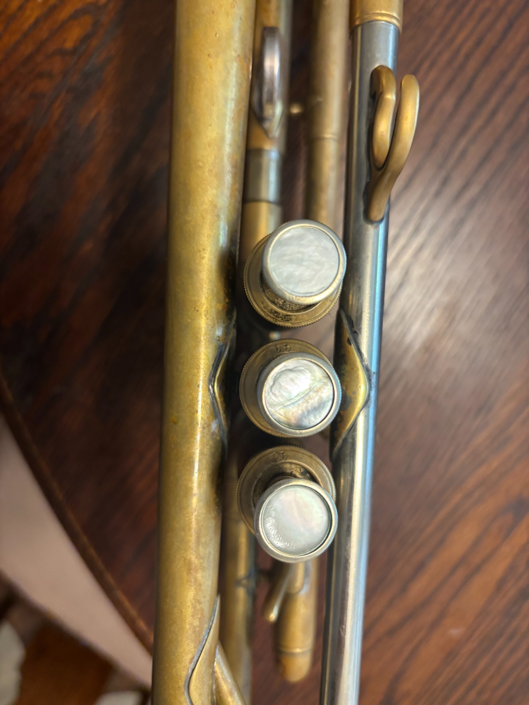

Musician first
Peter works across the stage, studio and community—performing, leading bands, teaching, and producing.
Work with Peter
Available for live performance, recording sessions, lessons and coaching, events and consulting.

On stage
Music in motion
Klezmer, Balkan brass, Turkish music and Eastern European folk traditions.


“
Client perspective
Peter and his band not only bring exciting music but also thoughtful collaboration and professional delivery.
Beyond the stage
Concert and festival production is a distinct part of Peter’s work: connecting artists and audiences.